目录：
一 综述
二 域名供应商的选择
三 域名的选择
四 CDN厂商的选择指南
五 CDN厂商的组合策略
六 域名的配置策略
七 开DNS厂商和设置主域名
九 开放回源节点配置教程（OpenOrigin）【以下载站&中转页&后端加速为示例】
十一 新增web大厅
十二 新增后端加速域名
十三 APP更新域名
十四 新增OSS 加速域名
十五 下载站域名
十六 中转页模板操作教程
十七 中转网址配置
十八 劫持处理：域名更换CDN节点
十九 防屏蔽指南
二十 外部白名单域名（含担保）
二十一 域名检测页操作教程
二十二 自定义解析功能教程
二十三 流量统计页面操作教程
二十四 批量清除缓存
二十五 证书管理操作教程
二十六 历史旧域名处理方式
二十七 谷歌浏览器域名标记爆毒处理方式
二十八 常见网络问题与报错处理
域名配置
域名配置是决定网站访问速度和用户体验的关键。这一部分将根据业主业务的地域需求，从选域名的购买、CDN厂商的选择，主域名和子域名的设置，域名后续的维护和更新的顺序开始介绍。
二、域名供应商的选择
1.域名购买的供应商参考
① 聚名海外平台（新加坡）：www.gname.com
② 原62海外平台（新加坡）：www.ddd.com
③ 老牌域名注册商：www.dynadot.com/zh/
④ 老牌域名注册商（无中文）：www.namesilo.com
⑤ 老牌域名注册商：www.name.com/zh-cn/
⑥ GoDaddy海外域名商：www.godaddy.com
2. 域名购买策略：分散注册和管理
“鸡蛋不要放在同一个篮子里”，建议将域名分散到多个账户中，每个账户注册少量域名，这样可以降低风险。
3. 域名账户策略：开通两步验证
除了设置复杂密码外，所有账户必须绑定手机或Google验证码，增加安全性，防止被盗。
4. 域名账户认证：注册资料真实有效
根据ICANN和国际域名注册规则，每个域名只能使用注册人姓名和邮箱，填写时需确保信息真实有效。建议使用护照上的英文名信息，因为其无须公证即可受理。除非有实体公司，否则不建议填写公司信息。确保邮箱能随时接收邮件，因为所有通知（包括处罚）都会通过邮箱发送。
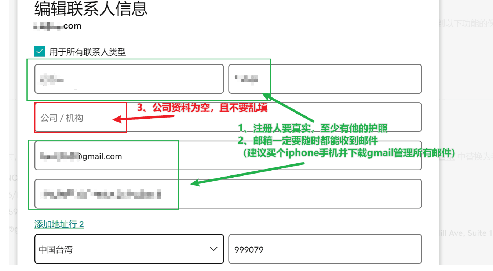
5. 付款方式
建议使用与注册人姓名相同的信用卡进行支付。虚拟信用卡是一个不错的选择，推荐参考以下虚拟信用卡支付服务商：Pokepay、Upay、Dupay，支持小额支付并可以通过USDT充值到信用卡。
1.域名选择：DNS解析速度
在选择域名时，解析速度是一个关键因素，尤其是当您的业务面向特定地区时。以下是针对几个主要地区的具体建议：
（1）南美洲地区运营：建议优先考虑使用 .vip、.app、.win、.co、.org 等顶级域名，这些域名在该地区的DNS解析速度较快。其次选择 .com、.net、.cc 等广泛使用的域名。
（2）中国地区运营：建议选择 .vip、.win、.top、.co，特别是 .top，因为其NS服务器位于国内，解析速度最佳。应避免使用 .app，因其部分NS服务器可能被阻断，影响访问稳定性。
（3）东南亚地区运营：推荐使用 .vip、.app、.win、.top、.co 等顶级域名，这些域名在东南亚地区通常具有较好的解析速度。
测试结果如下： 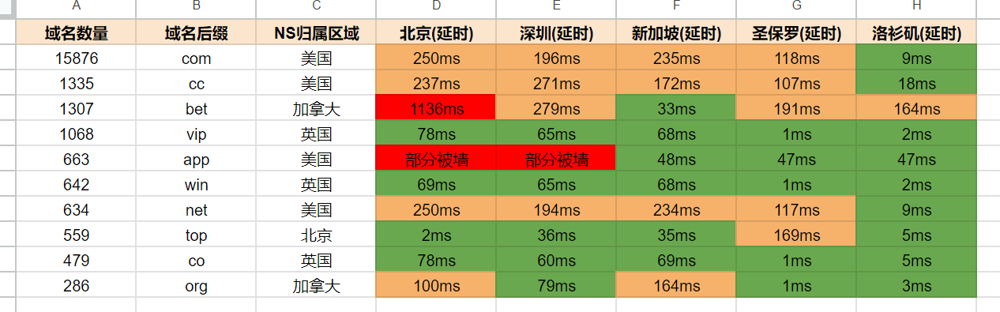
在购买域名或添加解析时，需考虑所在国家的法律和政策要求，避免选择与相关法律冲突的域名，以免导致域名频繁被封或被举报，影响正常运营。
亚太地区运营建议域名内不要含有 bet、gamble、game、casino 等敏感字符，容易导致域名被墙或被举报。
域名中的敏感字符并没有任何明确的规则，是由各cdn厂商给出的建议综合得出结论。
以下是几个因包含敏感字符而有被封或举报风险的域名示例：
（1）www.love-bet.vip — 域名包含 bet，存在被封或举报的风险。
（2）17bet.wirvert.com — 主机名 17bet 含有敏感字符，可能引发法律问题。
（3）www.wirvert.bet — 使用 .bet 顶级域名，直接表明敏感内容，容易引起问题。
3. 域名选择：选择不同规则的域名
建议为每个业务类型选择不同规则的域名，例如 vip.com、pay.com、hg.com、js.com 等。这类域名通常采用简短的关键词结尾或类似的多个域名组合，虽然便于记忆，但也容易被系统关联并触发屏蔽风险。
4. 域名选择：严格区分用途与定向购买
（1）目前我们配置的域名板块包括：Web大厅、APP大厅、OSS加速域名、后端加速域名和下载站域名。
（2）为了避免域名被系统关联或封锁，我们为每个板块单独购买独立的顶级域名，并确保这些域名只在对应的板块中独立使用。
这样不同板块的域名没有直接关联，不会被判定为同一个站点，从而降低因封锁一个域名导致整个系统无法访问的风险
例如：
123.com 和 www.123.com 用于 Web 大厅
234.com 和 www.234.com 用于 APP 大厅
345.com 和 www.345.com 用于后端加速
456.com 和 www.456.com 用于下载站。
且123.com 顶级域名专门用于 Web 大厅，而不能用于 APP 大厅或其他任何功能。
（3）不同板块的主域名（顶级域名）购买选择：
①Web大厅与下载站域名：这些域名需要公开，因此选择顶级域名应优先考虑易记的域名。为了便于会员访问和记住，Web大厅/下载站域名可以选择短小的顶级域名，如 vip.com、pay.com 等。
②APP大厅/OSS加速域名/后端加速域名：由于这些板块的域名不对外公开（只做功能使用），可购买记忆规律不强的顶级域名作为主域名，例如：sdhubdhd.top，确保域名较难被识别减少被封锁的风险，且价格较低经济实惠。
注： 每个顶级域名的子域名应只与对应的板块相关联，避免跨板块使用 ；在域名配置中会详细讲解每个版块域名作用及配置技巧。
5、建议改DNS（非常重要）
因为域名注册商一般只会采取冻结账户或停止解析，不会强制删除域名，所以建议域名不要使用本注册商的DNS（即外部DNS，例如CF、AWS等CDN的），这样即使域名账户被封了，解析还能正常生效很长一段时间（即正常访问），可以进行更换域名来平滑过度。
6、主域名跳转（非常重要）
一般网站都是引导和宣传网站主域名，且主域名都是比较值钱，所以建议该主域名除了用外部DNS外，用URL跳转的形式，以免主域名被封或拦截。
CDN决定了网速快慢、加载速度、地区封锁、攻击和防御，特别是高峰期，不同CDN组合，能够智能轮巡和切换，以保障给用户最优质的网络，特别是大陆或印尼经常出现地区封锁的（印尼封锁推荐：添加使用wangsuIP直接用IP访问，去掉域名）所以在配置域名之前，需做好CDN厂商的选择与组合策略。
1. 中国市场推荐的CDN
|
CDN名称 |
推荐理由说明 |
|
CloudFront-ALB（亚马逊ALB） |
使用亚马逊公共域名跳转，仅限 Web 大厅使用（不支持 PWA、极速APP、原生APP），全球通用。SEO 不支持。 |
|
CloudFront防封（三方公共域名） |
全球通用，提供公共域名(无需自有域名），防封防屏蔽。 |
|
火山云（volcanic） |
此节点覆盖中国大陆和国际市场，国际和中国大陆市场均可使用（即全球通用）。 |
|
Apeir8（A8) |
大陆专用，CN2 线路，海外不推荐。 |
|
Yundun（云盾） |
适合东南亚和中国大陆使用。 |
|
网宿IP（wangsu IP）/swift IP/Aperi8 IP |
提供独立IP，适用于封域不封IP国家（如中国、印度、越南等）。全球通用（130USDT/IP/月），超7天未启用将自动释放。 |
|
国际网宿（wangsu CDN） |
全球通用，稳定防刷。 |
|
Superedge |
具备移动网络专属清洗能力，适合用于中国大陆防封，海外不推荐 |
|
Swift Cdn |
大陆专用，CN2 线路，海外不推荐 |
|
大陆阿里云 |
适用于中国大陆市场，速度快、稳定，不易被封。但需自购备案域名与阿里云账号配置（如阿里云小号），存在使用一段时间后频繁更换域名的风险。 |
2. 海外市场推荐的CDN
|
CDN名称 |
推荐理由说明 |
|
CloudFront-ALB（亚马逊ALB） |
使用亚马逊公共域名跳转，仅限 Web 大厅使用（不支持 PWA、极速APP、原生APP），全球通用。SEO 不支持。 |
|
阿里云ALB |
使用阿里云公共域名跳转 仅限海外Web大厅（禁止中国港澳台访问）SEO不支持 |
|
CloudFront防封（三方公共域名） |
全球通用，提供公共域名(无需自有域名），防封防屏蔽。 |
|
Azure防封（三方公共域名） |
国际通用，不支持中国大陆 ，提供公共域名(无需自有域名），防封防屏蔽。 |
|
Cloudfront（亚马逊AWS） |
亚马逊官方CDN，全球通用，防刷推荐节点。 |
|
Cloudflare(CF) |
全球最大CDN，抗攻击能力强，全球可用，大陆较慢，防刷推荐节点。 |
|
国际阿里云 |
仅适用于海外市场，中国及港澳台禁用。 |
|
Apeir8（A8) |
适合东南亚和中国大陆使用 |
|
谷歌云 |
仅限国际市场使用，中国不可用 |
|
网宿IP（wangsu IP） |
提供独立IP，适用于封域不封IP国家（如中国、印度、越南等）。全球通用（130USDT/IP/月），超7天未启用将自动释放。 |
|
国际网宿（wangsu CDN） |
全球通用，稳定防刷 |
|
Yundun（云盾） |
适合东南亚和中国大陆使用 |
3 特殊CDN
|
开放回源 |
我方提供独立源服信息，您可使用外部三方CDN绑定到我方源站，需要有专业知识才能配置websocket、HTTP2、缓存等信息。 |
|
独立IP ( wangsu IP/swift IP/Aperi8 IP) |
提供独立IP，适用于封域不封IP国家（如中国、印度、越南等）。全球通用（130USDT/IP/月），超7天未启用将自动释放。 |
4 关键说明
（1）全球通用节点（如国际网宿、微软云、Cloudfront等）可同时用于中国和海外，但需注意本地化限制（如大陆访问速度、域名数量等）。
（2）Yundun 需根据目标地区选择：中国大陆市场或海外东南亚/印度市场。
（3）防封节点（微软防封、Cloudfront防封）适合需要规避屏蔽的场景，无需自有域名。
（4）ALB节点 仅限Web大厅，需注意功能限制（如不支持原生APP）。
1、核心配置原则
（1）多节点防御机制
① 每个功能模块（如WEB大厅、APP大厅、下载站等）必须配置至少3个不同CDN厂商的节点。多厂商组合可实现流量自动轮巡、抗DDoS攻击及防止区域性封锁。
② 避免单一节点依赖：不同CDN厂商的节点互为备用，确保服务高可用性。
（2）域名数量控制
① 每个CDN节点下同用途子域名建议3-10个，过多会导致DNS检测耗时增加，影响访问速度。
② 需定期检测域名是否被拦截或网络质量，及时清理无效域名。
- 主域名分配规则
每个CDN分配 3-10个主域名（顶级域名），关键版本配置（如Web大厅）配置 2-3个子域名（如 www、m）。
板块隔离：不同业务板块必须使用独立顶级域名，禁止跨板块复用（如APP大厅不可使用Web大厅的域名）。 - 域名选择建议
(1）公开域名（Web大厅/下载站）注册原则
优先选择短小、易记、高信任度后缀（如 .com、.net）。
示例：vip.com、fast.com、get.com（需评估预算与域名市场价）。
(2)隐蔽域名（APP/OSS/后端）注册原则：
使用非主流后缀（如 .top、.site、.xyz）降低成本。
域名名称随机化（如 a1b2c3d4.top），避免被猜测或关联。
示例：sdhubdhd.top（APP大厅）、kf9d3b7h.site（后端加速）。
3.具体配置示例
|
主域名 |
顶级域名 |
① 不同业务板块必须使用独立顶级域名，建议不跨板块复用 |
按域名用途分类固定在一个板块 |
每个CDN配置 3-10个主域名 |
123.com (分配给的大厅主域名） |
|
按照业务板块分别分配： |
|||||
|
业务板块 |
域名类型 |
购买原则 |
域名用途说明 |
CDN配置要点 |
参考案例 |
|
Web大厅 |
公开域名 |
优先选择短小、易记、高信任度后缀 |
用户直接访问，需短小易记， |
每个CDN配置1-3个主域名 |
@.123.com, www.123.com |
|
APP大厅 |
隐蔽域名 |
使用非主流后缀（如 .top、.site、.xyz）降低成本。 |
仅用于API通信，二级域名随机且无规律 |
ffr. sdhubdhd.top |
|
|
OSS加速 |
绑定CDN或OSS服务，使用随机域名 |
oss1.sdhubdhd.top |
|||
|
后端加速 |
内部服务通信，域名随机且独立 |
sef.kf9d3b7h.site |
|||
|
下载站 |
公开域名 |
优先选择短小、易记、高信任度后缀 |
用户直接访问 |
||
附录：运营建议与注意事项
① 关于屏蔽PC端访问以降低域名被封风险：
出于监管机制的特点，部分国家（如巴西）封锁域名的工作人员多通过PC端访问网页进行检测。
建议在运营初期阶段屏蔽PC端访问，仅开放移动端访问，可在一定程度上延长域名存活时间，降低被封概率。
② 可实现方式：
- 前端配置 UA 判断，拦截非移动端请求；
- 或使用 Nginx / CDN 层进行 PC 端重定向处理；
- 同时记录访问设备比例变化，以便随时调整策略。
新增各板块的子域名之前，需要先配置主域名，配置域名流程如下
1.进入运营管理 > 域名管理 > 新增
打开新增主域名的弹窗。
2.选择节点
在弹窗中，选择需要使用的CDN节点（如阿里云、Azure、CloudFront等），并确认其是否已启用。
（1）如果节点已启用，显示为“开启”；
（2）如果未启用，则显示为“关闭”。
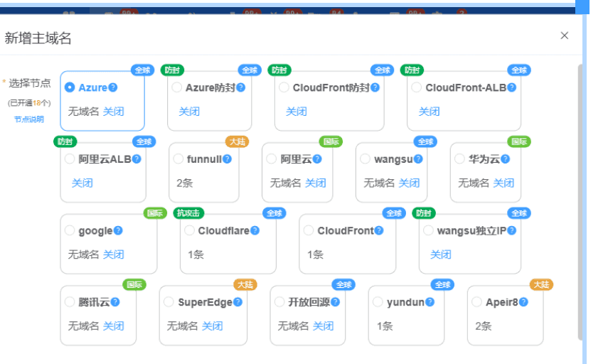
(1）大陆阿里云ESA key创建/创建策略：
https://ram.console.alibabacloud.com/polici 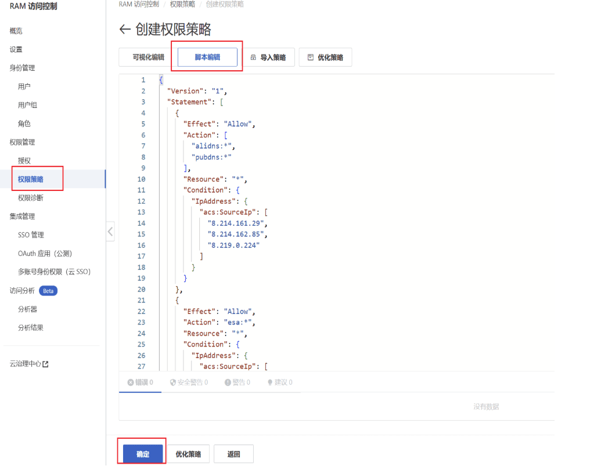
{
"Version": "1",
"Statement": [
{
"Effect": "Allow",
"Action": [
"alidns:*",
"pubdns:*"
],
"Resource": "*",
"Condition": {
"IpAddress": {
"acs:SourceIp": [
"8.214.161.29",
"8.214.162.85",
"8.219.0.224"
]
}
}
},
{
"Effect": "Allow",
"Action": "esa:*",
"Resource": "*",
"Condition": {
"IpAddress": {
"acs:SourceIp": [
"8.214.161.29",
"8.214.162.85",
"8.219.0.224"
]
}
}
}
]
}
(2）创建user界面
https://ram.console.alibabacloud.com/users
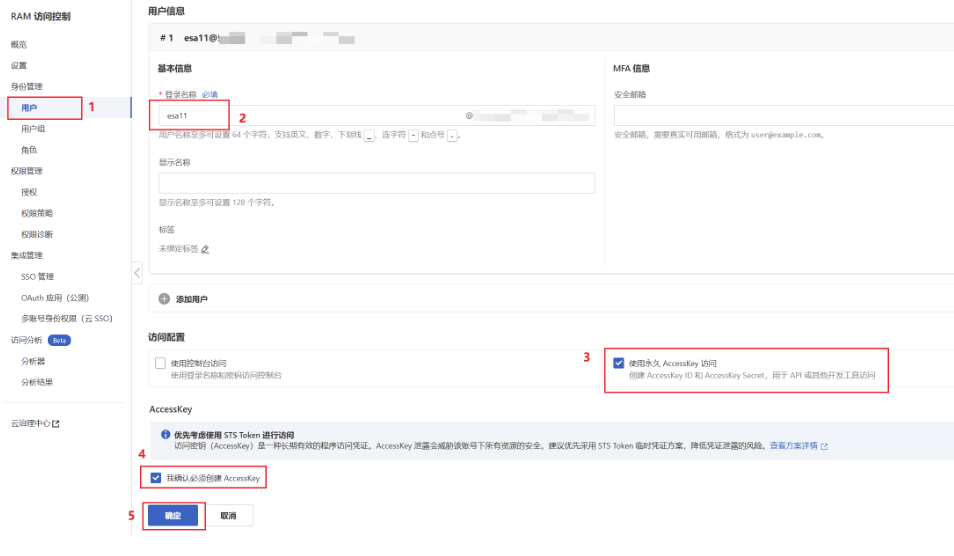
(3)新增大陆阿里云key-ESA
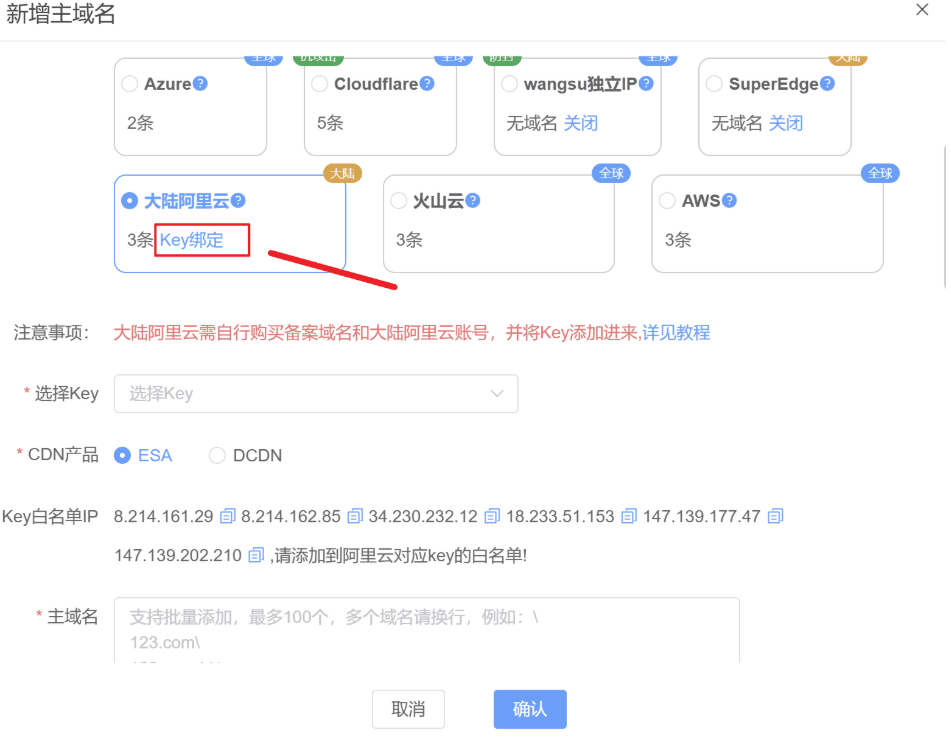
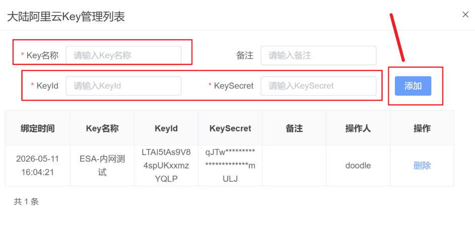
(4)新增大陆阿里云ESA-产品域名 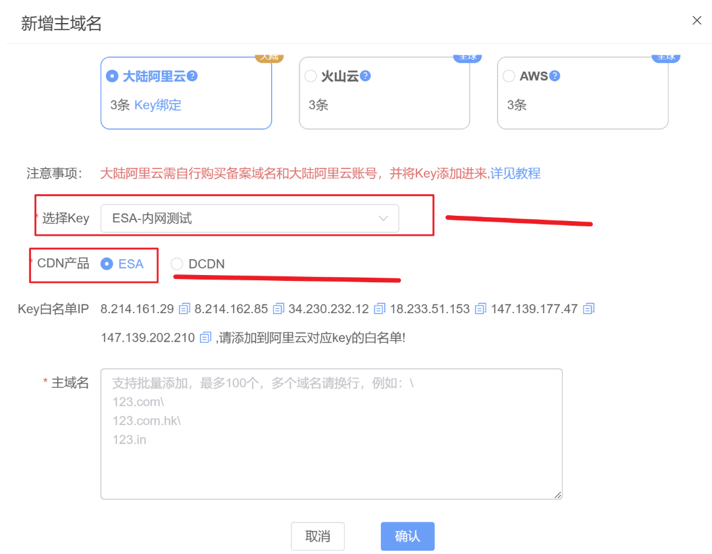
（5) 阿里云进入ESA控制台
https://esa.console.alibabacloud.com/siteManage/add
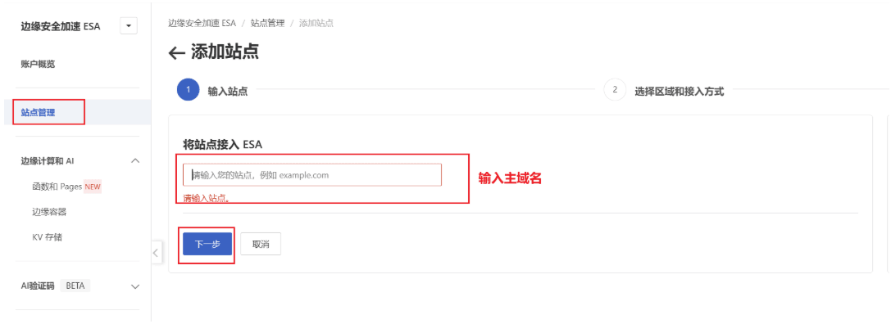
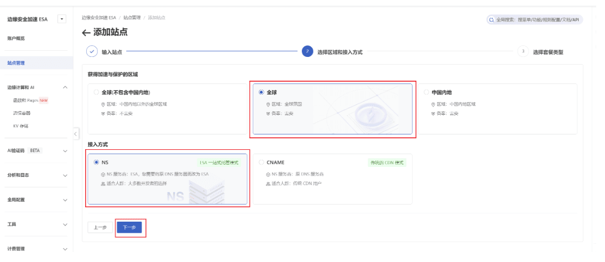
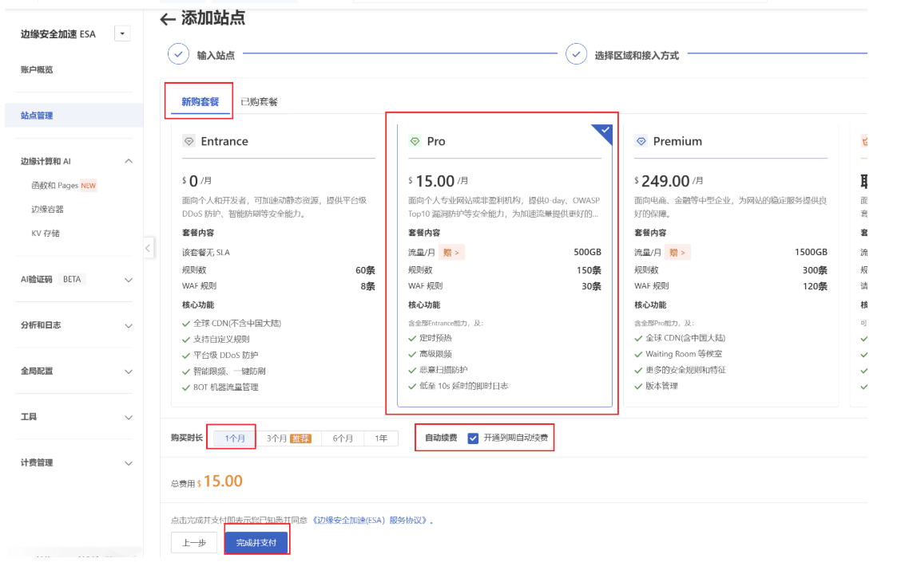
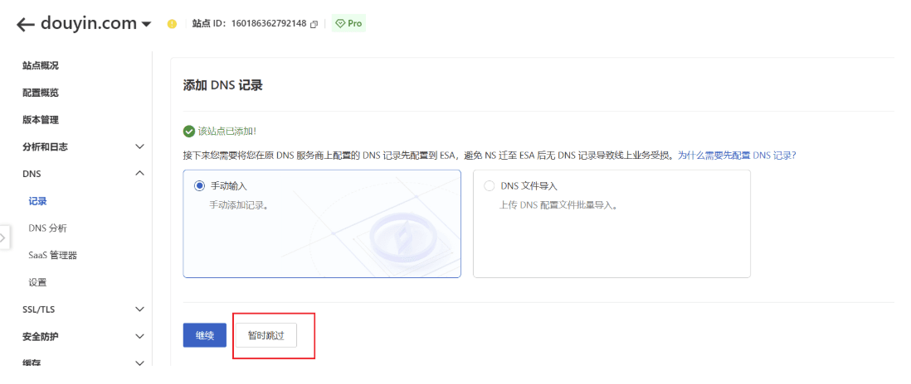
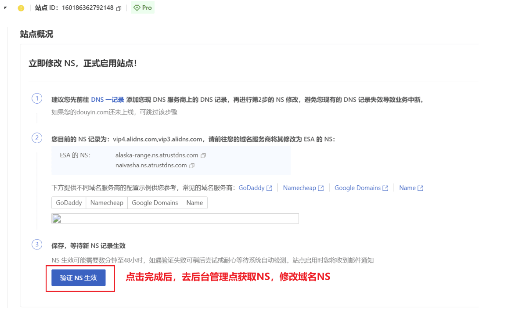
（6）添加获取NS
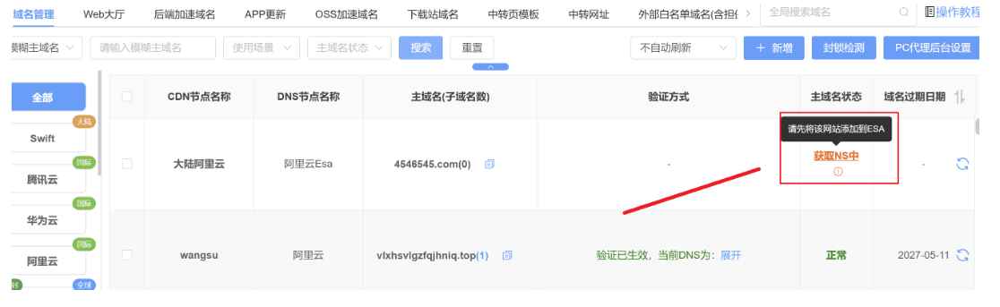
九. 开放回源节点配置教程（OpenOrigin）【以下载站&中转页&后端加速为示例】
1功能说明：功能说明：我方提供独立源服务IP信息，您可使用外部三方CDN绑定到我方源站，支持的域名类型有web大厅、下载站、中转页、后端加速域名，需要有专业知识才能配置websocket、HTTP2、缓存(缓存遵循源站即可)等信息。
2新增说明：域名管理-开通开放回源（OpenOrigin）节点，绑定回源域名用于源站解析值。正常流程添加域名获取源站域名/IP，配置CDN。
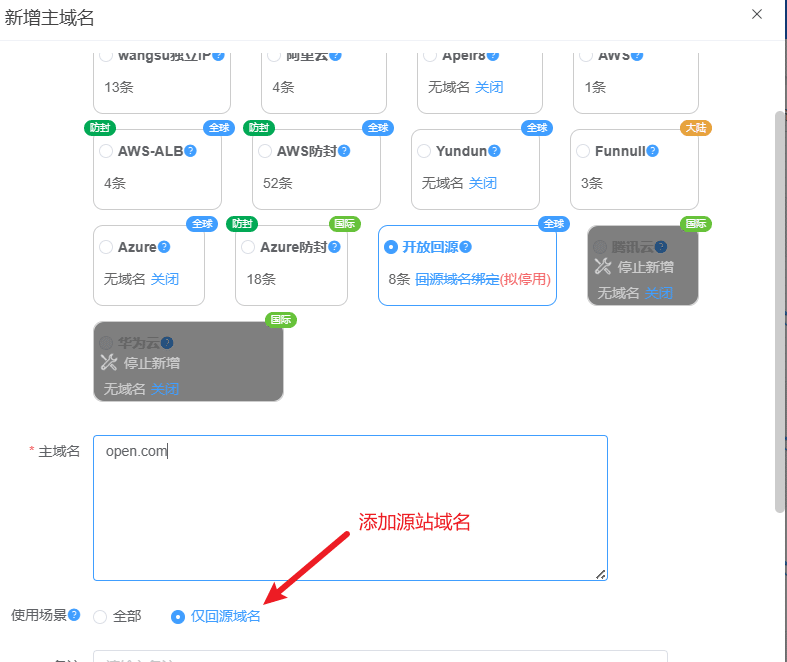
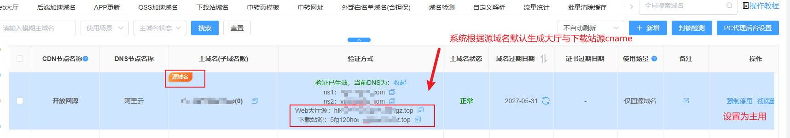
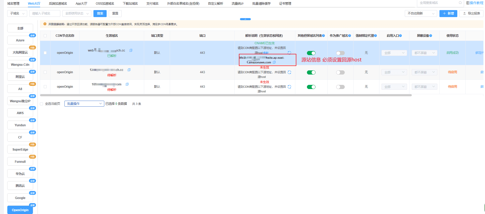
3 开放回源是一种重要的CDN配置，可以帮助您更好地优化内容分发服务。以下是一般情况下开放回源CDN的配置教程步骤：
①登录CDN控制台：首先登录您的CDN服务提供商的控制台，找到相关的CDN配置页面。
②找到回源设置选项：在CDN控制台中找到回源设置或者源站配置选项。这通常会在域名管理或者加速服务设置中。
③配置回源地址：在回源设置中，您需要填写您的源站地址。这是您实际网站服务器的地址，CDN会从这里拉取内容并分发。
例子：源: xxxxxx.com
协议：http
端口：80
回源host： xxxxxx.com
回源host一定要配置
4 注意事项：
①当需要使用开放回源的域名时，必须在域名所使用的 CDN 后台开启跨域访问。
（提示：开放回源域名需强制开启跨域设置，如不清楚如何设置，可与贵司 CDN 服务商咨询。）
②配置回源协议和端口：您可能需要指定回源协议（HTTP或HTTPS）和端口号。确保这些设置与您的源站服务器配置一致。
③设置回源路径：有时候您需要指定回源路径，特别是当您的源站有多个子目录时。
④保存配置：完成以上设置后，记得保存配置。有些CDN服务可能需要一些时间来生效这些变更。
⑤测试回源设置：最后，确保您的回源设置正确工作。您可以通过访问CDN加速后的网站并检查内容是否正确来进行测试。
请注意，具体的步骤可能会因CDN服务提供商而有所不同，因此建议查阅您的CDN服务提供商的文档或者向其技术支持寻求帮助，以确保正确配置开放回源CDN，配置过程中如遇到问题或任何疑问，请随时与我们联系，可优先咨询CDN厂商相关配置排查。
5 下载站跳转说明
下载站域名配置额外路径跳转规则
（1）/normal/ & /cocos/ & /hall/ & /download/目录不跳转： -> https://xxx/cocos/config_data.json -> oss://bucket/cocos/config_data.json （2）其余所有路径跳转 /normal/目录下： -> https://xxx/index.html -> oss://bucket/normal/index.html
6 中转页跳转说明
中转页域名 配置路径跳转规则
（1）/fapage/ & /cocos/ & /hall/ & /siteadmin/ & /active/ & /preview/ & /agent/目录不跳转： -> https://xxx/cocos/config_data.json -> oss://bucket/cocos/config_data.json （2）其余所有路径跳转 /fapage/目录下： -> https://xxx/index.html -> oss://bucket/fapage/index.html
7 用阿里云DCDN示例，创建下载站&中转页域名
（1）进入【域名管理】添加加速域名
-
登录阿里云控制台，进入「全站加速 DCDN」模块。
-
在左侧导航栏点击【域名管理】，选择“添加域名”。
（2）填写基本信息
- 业务类型：选择【全站加速】（适用于下载站/中转页场景）。
- 加速区域：根据业务需求选择【全球（不包含中国内地）】。
- 加速域名：填写要开放访问的加速域名（如
download.example.com），确保该域名未在其他阿里云CDN/DCDN产品中占用。 - 提示：仅支持全英文小写域名，暂不支持中文域名或泛域名。
（3）配置源站信息：点击【新增源站信息】按钮，打开源站配置弹窗。
弹窗内配置：
-
类型：选择【源站域名】。
-
域名：填写源站域名地址（如 ALB 或 ECS 的实际访问域名）。
-
优先级：选择【主】。
-
权重：填写数值（默认可填 10）。
-
端口：选择【80端口】，用于 HTTP 访问。
-
点击【确定】完成源站配置。
（4） 保存并等待审核
-
返回主界面后，确认所有信息填写无误，点击【确定】提交配置。
-
域名添加成功后，系统将进行域名审核及 CNAME 分配，通常几分钟内可生效。
注意事项
-
请确保加速域名已完成备案（若需中国节点）或选择“全球（不包含中国）”区域跳过备案。
-
若使用的是中转页，请确保源站返回页面带有跳转逻辑或相关前端代码。
-
配置完成后，可在DNS解析中添加对应的CNAME记录，完成接入。
（5）创建完成后控制台界面
（6）回源配置
（7）下载站重定向规则
待重写URI ^/((?!normal/|cocos/|hall/|download|siteadmin|active|preview|agent/).*)$
目标URI /normal/$1
（8）中转页重定向规则
待重写URL ^/((?!fapage/|cocos/|hall/|siteadmin/|active/|preview/|agent/).*)$
目标URL /fapage/$1
执行规则 redirect
（9） HTTPS配置 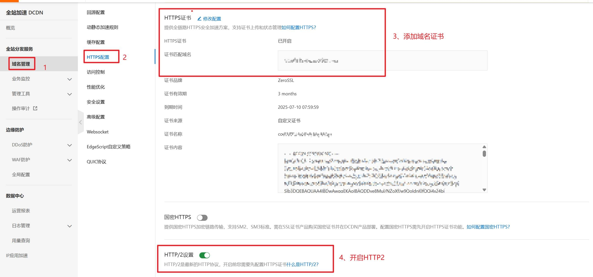
（10）性能优化
（11）基于云平台CDN配置
11.1 业主获取到回源域名
例如：
11.2 回源地址与回源Host配置
注：修改回源，一定要记得配置回源host，要不然会失败
基本信息
截图示例：
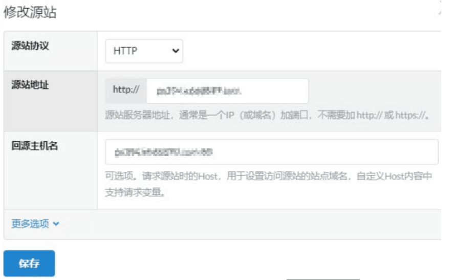
11.3 （可选）回源改写规则配置，CDN支持建议配置。
[1]
待重写的Path: ^/(home/|error|404|antiban|promote-game|iframe-route|club-index.html)
目标Path: /index.html
执行规则: break
[2]
待重写的Path: ^/$
目标Path: /index.html
执行规则: break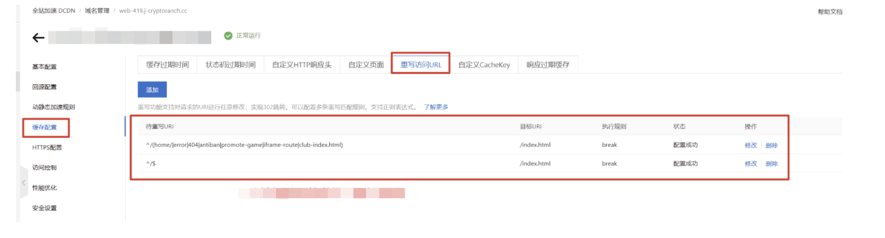
8 、后端加速域名开放回源CDN配置--阿里云模板范例
（1）首先在后台添加后端加速域名开放回源域名，点击启用获取到后端加速域名的源地址（红色圈起来的地方）。
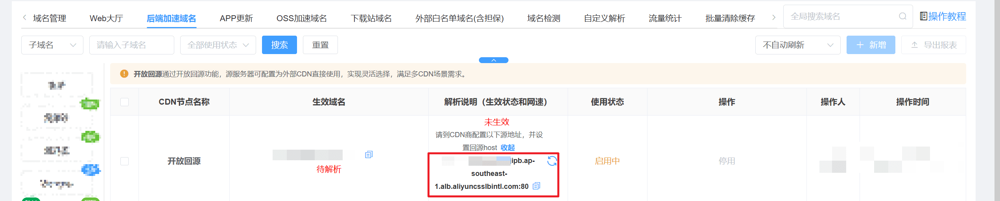
（2） 用阿里云DCDN示例，创建加速域名
（3）创建完成后控制台界面
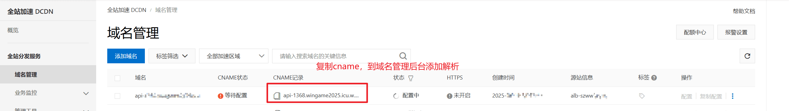
（4）回源配置
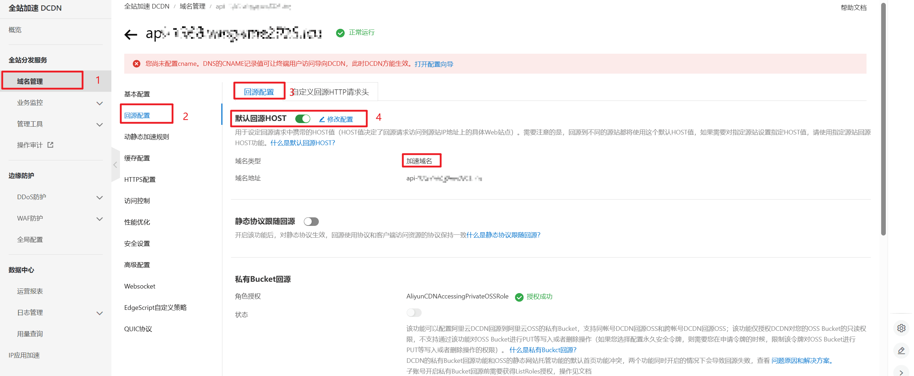
（5） 重要：一定要添加自定义回源HTTP请求头
自定义参数：cdn-loop
取值：opensourcelb
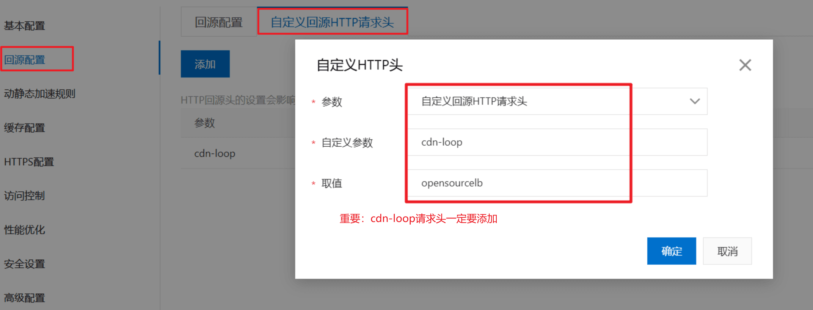
（6）动静态加速规则
静态文件类型：.mp3.wma.flv.mp4.wmv.ogg.avi.doc.docx.xls.xlsx.ppt.pptx.txt.pdf.zip.exe.tat.ico.css.js.swf.apk.m3u8.ts.ejs.svg.woff.otf.gif.png.bmp.jpeg.jpg.html.htm.shtml
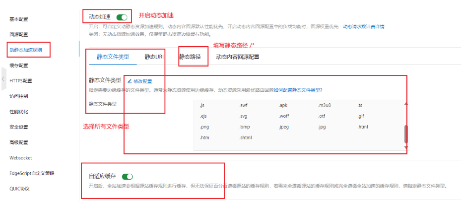
（7） 缓存配置
|
内容：mp3,wma,flv,mp4,wmv,ogg,avi,doc,docx,xls,xlsx,ppt,pptx,txt,pdf,zip,exe,tat,ico,css,js,swf,apk,m3u8,ts,ejs,svg,woff,otf,gif,png,bmp,jpeg,jpg,json,astc |
|
类型：文件后缀
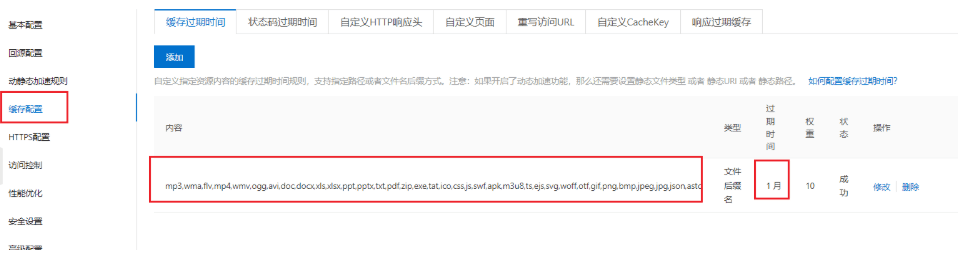
（8）HTTPS配置
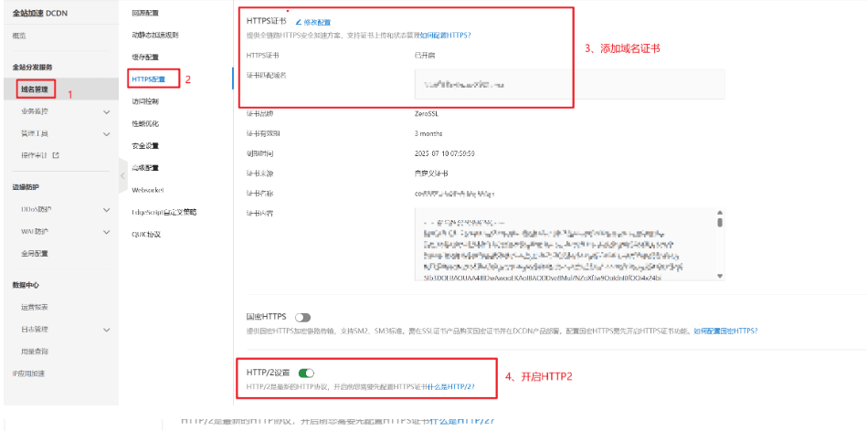
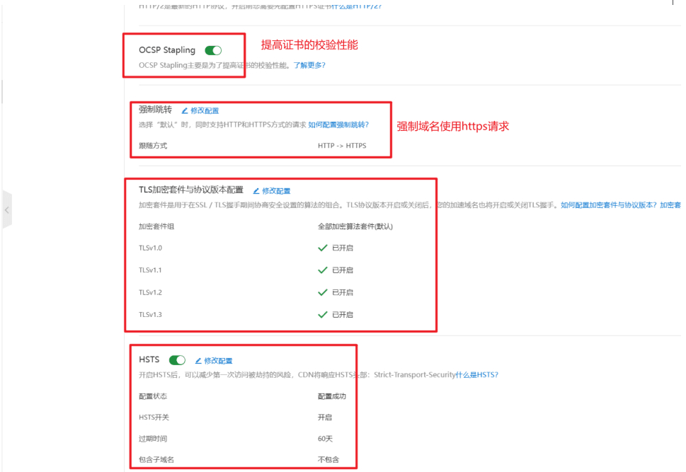
（9）性能优化
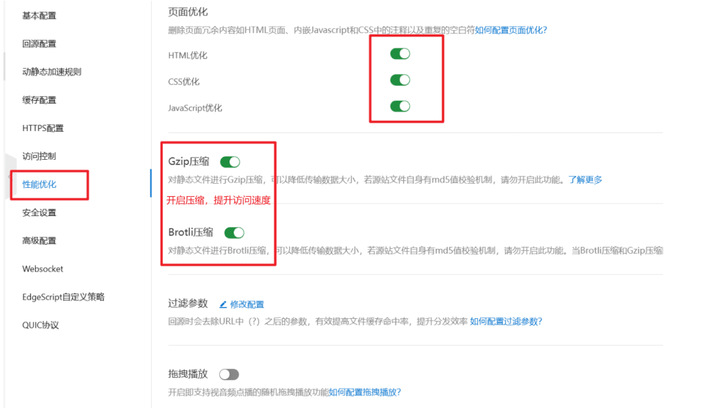
（10）高级配置
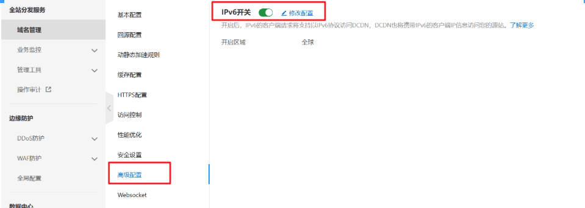
(11) 重要：Websocket必须开启
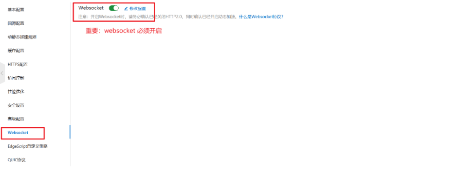
1.选择CDN节点后，添加主域名
在下方的输入框中填写所需添加的主域名。支持批量添加，最多可以添加20个域名，多个域名之间用逗号隔开。
示例输入格式：123.com、123.com.hk、123.in。
2.确认配置
确认所有选择的节点和配置无误后，点击“确定”或“保存”按钮，完成新增主域名的配置。
3.取消操作
如果不想进行添加，可以选择点击“取消”按钮来退出当前操作。
4.查看配置结果 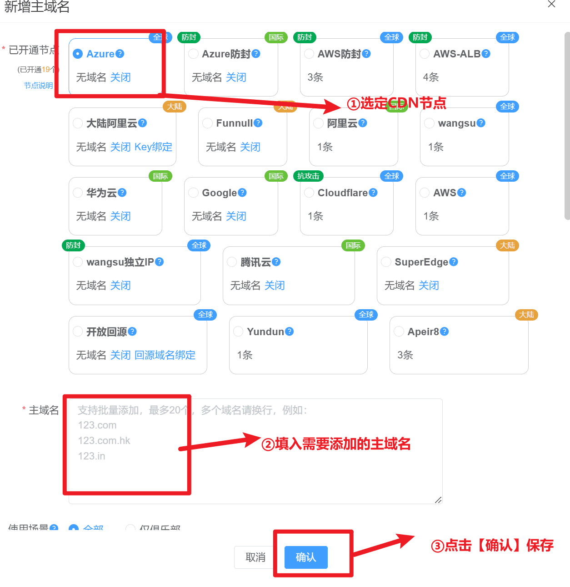
返回域名管理界面，查看新增的主域名和对应的CDN节点配置是否成功。
5.配置和验证主域名
①在选择CDN节点后，确保为该节点配置了正确的域名，并进行相应的验证。
②您可以点击“获取NS”，获取DNS的服务器地址，然后再到购买域名网站后台修改对应域名的DNS。
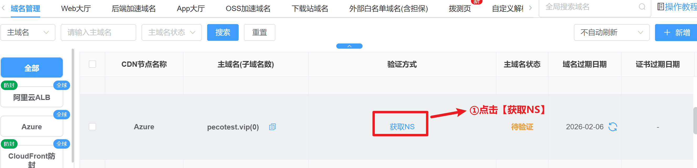
③修改完DNS后，点击验证即可完成。（域名DNS验证生效需要一段时间，请耐心等待）
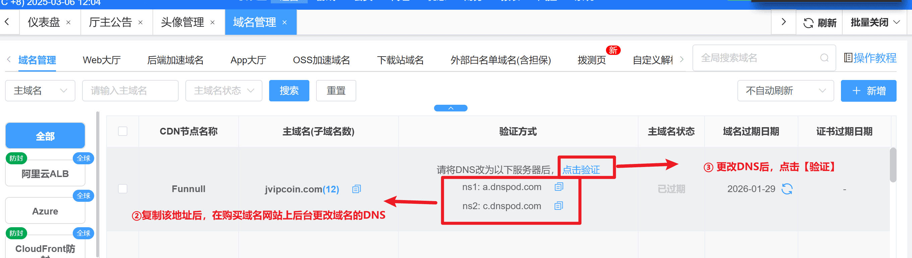
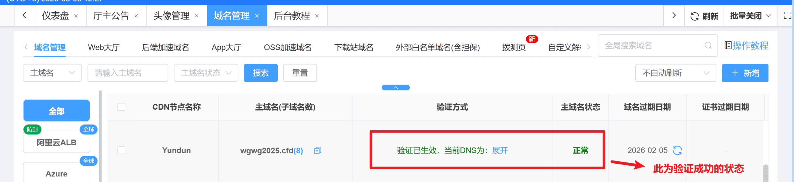
6.主域名更换节点
- 功能说明：仅限域名已托管DNS厂商（阿里云与cloudflare），切换过程无感知，预计5-30分钟域名生效
在遇到攻击时，能够快速熔断当前CDN，并调整切换到其他CDN，确保业务连续性。。 - 新增域名切换CDN功能，支持切换的可用CDN节点：
- CF
- A8
- Wangsu
- Swift
- Yundun
- Aliyun
- SuperEdge
- 保障稳定性：通过多CDN的切换能力，提升域名的正常运行和稳定性，减少因单一CDN故障导致的服务中断风险。
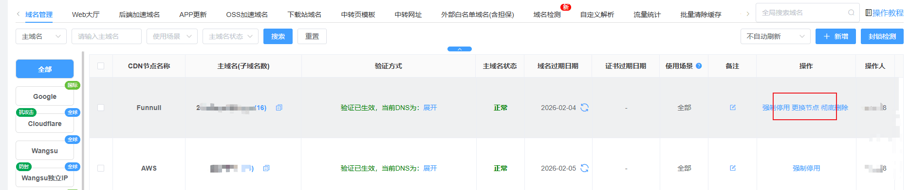

7.PC代理域名设置
- 作用：PC代理后台专属域名，增加域名独立配置。
- 规则：选择仅PC代理域名 ，添加对应CDN节点配置
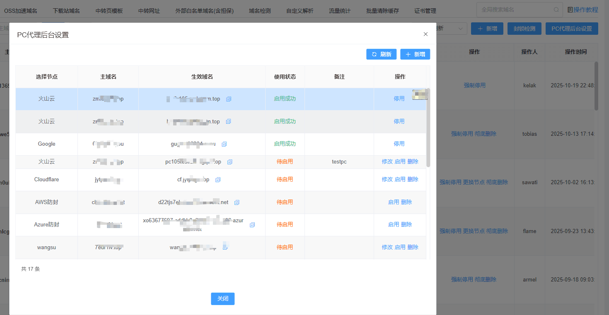
1.web大厅域名概述
大厅域名是指的是用于访问和管理网站大厅的域名。是指用户进入的主界面，涵盖登录、导航、游戏或服务入口等核心功能。因此，大厅域名主要用于访问这些核心页面，确保用户能够顺畅地进入和使用平台的各项服务。
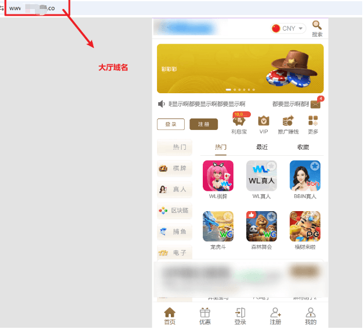
2. 新增域名操作教程
（1）点击如web大厅新增域名 按钮，弹出新增域名窗口。
（2）在“选择节点”部分，选择合适的CDN或防护节点（示例操作：如选择 yundun（全球） 作为主要加速节点。）
（3）在“选择域名”部分，勾选需要绑定的域名，例如：wgwg2025.cfd。确保域名正确无误。
（4）在"选择端口"类型: 默认端口（国际推荐）：适用于大部分国家，推荐使用；固定端口（适用于屏蔽机制国家）：适用于某些需要特定端口的地区。例如，选择 默认端口（国际推荐）。
（5）在“生效域名”部分、，你可以根据不同的业务需求，选择合适的规则，包括泛解析、根域名、生效子域名等。以下是完整的规则总结：
①.泛解析（支持所有子域名）
- 形式：*
- 作用：匹配所有子域名，例如 www.example.com、api.example.com、test.example.com 等。
- 示例：*.example.com（允许所有 example.com 旗下的子域访问）
- 注意：增加泛解析后该域名其他子域名无法增加解析(除顶级域名)，且刷新缓存需要对应访问的实际域名进行人工清理缓存。
② 根域名（不带 www，主域名生效）
- 形式：@
- 作用：仅让主域名生效，如 example.com，不包含 www.example.com。
- 适用场景：需要直接访问主站（裸域访问）；适用于官网站点这种公开域名等，比如web大厅域名或者下载站域名 。
- 示例：@（即 example.com）
③.指定子域名（仅某些子域生效）
- 形式：具体的子域名（如 www、api、cdn）
- 作用：仅让某些特定子域生效，不影响其他子域。
- 适用场景：单独业务系统（如 API、CDN、静态资源等）；不同业务功能隔离（如 www.example.com 作为主站，api.example.com 作为接口）。
- 示例：
- www（www.example.com）
- api（api.example.com）
- cdn（cdn.example.com）
关键总结
|
配置类型 |
形式 |
作用 |
|
泛解析 |
* |
匹配所有子域（*.example.com） |
|
根域名 |
@ |
仅主域名生效（example.com） |
|
指定子域 |
www、api、cdn |
仅生效指定子域 |
（6）点击 "+" 按钮 添加生效域名；如需删除已添加的域名，点击 "-" 按钮
（7） 确认所有配置正确后，点击 确认 按钮。
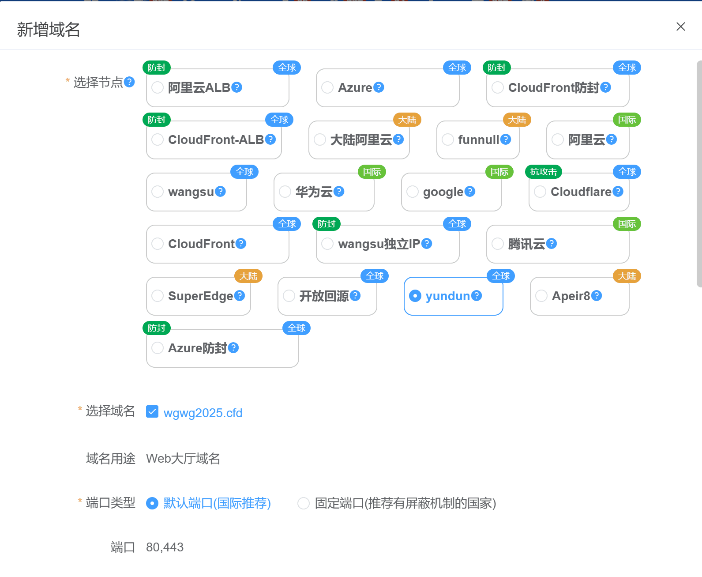
3. Web 大厅域名管理说明
（1） 页面说明
在 Web 大厅域名管理界面，用户可以对已配置的域名进行以下操作：
① 启用 / 停用：控制域名是否处于激活状态，启用后可正常使用。
② 修改：调整域名配置，如 CDN 绑定、访问限制等。
③ 删除：移除不再使用的域名。
④ 绑定代理：为特定域名分配代理，以便管理流量和推广策略。
⑤ 清理缓存：刷新 CDN 或 DNS 解析缓存，确保域名解析最新配置生效。
（2） Web 大厅域名设置
Web 大厅域名可进行多种自定义配置，以适应不同的运营需求。
① 作为推广域名
- 作用：将该域名作为前台代理推广专用地址，便于代理推广暴露使用和流量分发。
- 规则：必须保持至少一条域名开启该功能。
② 启用入口
- 作用：控制该域名的访问权限，适用于不同的客户端或平台。
- 选项：
- 全部（默认）：所有用户均可访问，无限制。
- 仅极速APP：该域名只能通过极速 APP 访问，网页端无法直接访问。
- H5 和 PWA：仅允许 H5 和 PWA 访问，但不会出现在轮巡列表（即不会被系统主动推荐）。
- 支持启用入口 CDN 节点：阿里云、Swift、Cloudflare（CF）、Yundun、Wangsu-CDN、AWS
③ 屏蔽设备
- 作用：限制特定设备访问该域名，提高访问管理的灵活性。
- 选项：
- 都不屏蔽（默认）：所有设备均可访问。
- 屏蔽手机端：PC 端可访问，移动端（安卓/iOS）不可访问。
- 屏蔽 PC 端：移动端（安卓/iOS）可访问，PC 端不可访问。
- 支持屏蔽的 CDN 节点：阿里云、Swift、Cloudflare（CF）、Yundun、Wangsu-CDN、AWS
（3）Web大厅域名绑定代理
- 功能说明：支持为线下代理配置专属Web大厅域名，便于推广归属统一管理。域名启用后，会员通过对应地址访问，即可识别其绑定代理。
- 上级归属判定优先级
① 推广链接的上级（最高优先级）
② 渠道ID配置的强制绑定上级
③ 域名管理中配置的强制绑定上级（无上级时才生效） - 使用建议
① 建议优先使用推广链接绑定，确保归属明确
② 强制绑定上级仅适用于特殊配置需求，避免与推广链接或渠道设置冲突
③ 未配置推广链接或渠道的情况下，系统将读取域名管理中配置的绑定上级作为归属判断依据
（4）Web大厅域名更换节点
- 功能说明：仅限域名已托管DNS厂商（阿里云与cloudflare），切换过程无感知，预计5-30分钟域名生效
在遇到攻击时，能够快速熔断当前CDN，并调整切换到其他CDN，确保业务连续性。。 - 新增域名切换CDN功能，支持切换的可用CDN节点：
- CF
- A8
- Wangsu
- Swift
- Yundun
- Aliyun
- SuperEdge
- 保障稳定性：通过多CDN的切换能力，提升域名的正常运行和稳定性，减少因单一CDN故障导致的服务中断风险。
1. 功能说明
后端加速域名用于 Web 大厅访问后端接口请求数据，即用于访问和调用特定 API 的域名或网址，并用于标识和定位特定的 API 服务。通常包含以下组成部分：协议（如 https://）、主机名（如 api.example.com）、可能的端口号（如 :8080）、路径（如 /api/v1）。例如，如果 API 服务的域名为 cdnapiif.example.com，那么访问该 API 的基本 URL 可能是：https://cdnapiif.example.com
Web 大厅需要使用 正确的后端加速域名 来构建 API 请求，以便与 API 服务进行通信，获取所需数据或执行特定操作。确保使用 正确的后端加速域名和相应的端点路径 是 API 集成的重要部分。
2. 新增说明
参考 Web 大厅域名 配置方式。
3. 效果说明
Web 大厅静态化后部分 API 请求数据效果示例：

（返回顶部）
1. 功能说明
APP更新域名用于绑定母包下载地址，通过CDN加速实现新版资源包的快速获取，仅用于APP热更新场景。
2. 新增域名流程
（1) 进入后台【域名管理】模块，点击上方页签【APP更新】
(2)点击右上【新增】按钮，打开新增域名配置弹窗
(3) 完成以下配置项填写：
选择节点：选择1个或多个CDN节点（建议至少3个不同厂商组合）
选择域名：勾选系统已有的主域名（未添加需先在“域名管理”添加）
域名用途：自动带出“APP更新”
生效域名：填写用于更新下载的具体子域名（如 update-xxx.com）
3.启用说明
（1） 域名解析成功后点击【启用】即可生效
（2）启用后支持【清缓存】操作，确保新版资源即时同步
1. 功能说明
OSS 加速域名主要用于 站点图片及其他资源的 CDN 加速，结合 CDN + OSS/S3 功能，提高资源加载速度，并提供更高的安全性，具体优势包括：
（1）更高的安全性：具备 WAF 防御，减少攻击风险；
（2）避免资源风控：减少因资源风控或屏蔽导致的访问问题；
（3）优化访问体验：提高站点图片、视频等静态资源的加载速度。
2. 新增说明
（1）参考 Web 大厅域名 配置方式。
（2）目前 Cloudflare（CF）CDN 节点不支持 OSS 加速域名绑定使用。
3. 效果说明
（1）未启用前资源加载效果：
（2）已启用后资源加载效果：
1 操作步骤与说明
（1）功能说明
下载站域名用于承载APP母包的安装下载，通过绑定多个CDN节点分发资源，提升首次安装包下载的成功率和速度。支持与Web大厅绑定代理规则一致配置。
（2）参考 Web 大厅域名 配置方式。
3. 参考Web 大厅域名管理说明
4 下载站域名绑定代理
（1）功能说明 下载站域名用于APP首次安装包分发，也可配置绑定代理，用于记录首次安装来源归属。
（2）APP绑定上级优先级
① APP内部识别绑定上级（如激活码或推广链接）
② 渠道ID配置的强制绑定上级
③ 下载站域名配置的绑定上级
（3）配置规则说明
① 下载站跳转访问Web大厅时，继承Web大厅域名绑定逻辑
② 下载后的APP在安装激活阶段，仍按上述优先级重新判定上级归属
（4）使用建议
① 若使用推广链接下载APP，则直接绑定推广上级，推荐优先采用此方式
② 若需覆盖默认上级，可配置“强制绑定代理”项
③ 不建议混用渠道ID与域名强绑，以避免绑定冲突
（5）Web大厅域名更换节点
- 功能说明：仅限域名已托管DNS厂商（阿里云与cloudflare），切换过程无感知，预计5-30分钟域名生效
在遇到攻击时，能够快速熔断当前CDN，并调整切换到其他CDN，确保业务连续性。。 - 新增域名切换CDN功能，支持切换的可用CDN节点：
- CF
- A8
- Wangsu
- Swift
- Yundun
- Aliyun
- SuperEdge
- 保障稳定性：通过多CDN的切换能力，提升域名的正常运行和稳定性，减少因单一CDN故障导致的服务中断风险。
1 中转页模板新增配置
（1）功能说明：用于创建跳转页面模板，支持设置样式、跳转方式、目标站点等，可用于缓解域名封禁问题。
（2）操作路径：域名管理 > 中转页模板 > 新增

（3）配置步骤：
① 填写模板名称（必填）
② 选择模板类型（支持：安全检测、滑块验证、点击验证、验证码）
③ 选择模板样式（样式一、样式二、样式三）
④ 配置脱敏防屏蔽（启用后将隐藏网页标题/关键字/描述信息）
⑤ 设置中转方式：
- 手动点击：用户需点击跳转
- 自动跳转：系统自动跳转（可设置跳转时间）
⑥ 设置按钮打开方式（当前页 / 新页面）
⑦ 选择中转目标（下载站 / Web大厅 / 外部链接）
⑧ 是否展示客服链接（支持隐藏）
⑨ 是否开启统计代码（用于流量分析）
⑩ 填写模板备注（非必填）
（4）注意事项：
①模板支持多语言自动预览
②不同跳转方式适用不同业务场景
③页面样式会影响用户体验与跳转成功率
2 模板管理说明
（1）支持操作：详情 / 修改 / 删除
（2）使用建议：
①模板配置后，可在“域名中转”中调用使用
②统一模板管理便于品牌规范和数据统计
③建议优先创建适配多语言与渠道的跳转样式模板
1 功能说明
中转网址用于将用户访问的域名跳转到目标链接，通过配置中转模板可实现防屏蔽、跳转跳链、防泄露等目的。
2 操作路径
进入【域名管理】>【中转网址】，点击右上角【新增】或【批量新增】进行配置。
3 配置步骤
（1）单个新增
① 选择节点：如 Cloudflare、Azure等，决定该域名所挂载的CDN线路。
② 选择域名：需先在“域名管理”模块中完成添加和验证，支持多品牌名下域名。
③ 选择端口类型：
默认端口（推荐）：80/443端口，为常规HTTP/HTTPS访问标准端口，适配国际线路。
固定端口：适用于特定国家绕屏蔽机制配置，如设置 8923、8443 等非标准端口。
注意事项：
固定端口可提高域名抗封能力，但必须输入完整带协议的网址才能打开，如 https://123.com:8923。
④ 填写中转具体子域名：如 www、@、*，支持泛解析及二级子域名。
⑤ 选择中转页面模板：需提前在【中转页模板】模块中创建，模板中定义跳转逻辑、样式、防屏蔽配置等。
⑥ 填写备注（选填）：便于日后识别用途。
点击【确认】提交配置。
（2）批量新增
① 依次填写：节点、主域名、端口类型、端口、中转子域名、中转模板、备注。
② 可点击右侧【+】批量添加多条配置。
③ 完成后点击【确认】保存。
4 使用建议
① 建议将中转域名提前绑定模板，确保跳转稳定。
② 不同场景可配置不同模板，提高灵活性与安全性。
③ 若跳转目标为 Web 大厅或下载站，建议提前配置好模板中跳转逻辑。
④ 开启脱敏、防屏蔽、客服隐藏等功能，可提升访问率并防止恶意抓取
1. 因市面上很多域名劫持的，主要原理是运营商内部人员劫持当前域名的DNS（即内鬼卖量），一旦发现劫持，则更换DNS即可（若再被劫持，则再换DNS，以此类推，别无他法）
2 新CDN节点添加路径
后台路径：运营管理 > 域名管理 > 域名管理 > 新增节点 > 选择 CDN 厂商（如 Aliyun） > 开通
3 常用DNS检测工具
可用于检测全球DNS同步状态：
https://www.nslookup.io/dns-checker
1、防封锁场景说明
（1）背景说明
① 中国大陆和印尼、巴西等国家存在域名被墙、被拦截、被封锁的现象，主要原因是国家级防火墙（如GFW）会主动扫描网址，通过关键字、特征等触发封锁。默认端口如 80、443 更易被扫描。
② 为解决此类问题，平台提供多种防封手段，包括固定端口、公共域名、回家路配置、URL跳转等。
2、防封锁操作建议
（1）固定端口配置
① 固定端口能有效绕过443/80扫描，必须输入完整的地址才能打开，如：https://www.123.com:8923。
② 支持节点：仅WANGSU、YUNDUN、A8、Swifit支持。设置入口为：运营管理＞域名管理＞Web大厅或支付域名＞新增或修改（已解析需先停用再修改）。
（2）CDN公共链接加速
可使用 ALB 公共跳转链接，如 AWS ALB、阿里云 ALB，仅支持 HTTP 协议。设置入口：运营管理＞域名管理＞国际阿里云/AWS ALB 节点。
（3）网宿独立IP
提供独立防封IP，适用于屏蔽域名但不封IP的国家（例如：印尼、中国、巴西、越南等）。定价为130U/IP/月，若超过7天未启用系统自动回收。
（4）大陆防拦截功能
启用关键词过滤，移除页面关键字、描述等敏感内容，入口：运营管理＞品牌和SEO管理＞开启防拦截。
（5）备用域名配置
建议提前准备备用域名，不启用，仅添加。备用设置入口：运营管理＞域名管理＞新增＞添加子域名（不启用）。
（6）URL跳转保权重
被封域名可配置301转发到新域名保留原SEO权重。适用于巴西、印尼等部分地区只封主运营商。
（7）用途隔离
一级域名尽量专用：
- 123.com / www.123.com 用于 Web 大厅
- 234.com 用于 APP 大厅
- 345.com 用于后端加速
- 456.com 用于下载页
防止“一篮子鸡蛋”被一起封。
（8）设置“回家路”邮箱
在官网展示官方邮箱，引导用户收藏，一旦被封，通过邮箱设置自动回复引导获取最新地址。
（9）会员保存多个域名
引导会员保存多个Web大厅域名，后期系统也会增加自动保存功能。
（10）补救机制
若不幸被封，建议提前预告变更域名，通过短信、邮件、极光推送等方式通知用户。
（11）APP自恢复机制
APP支持加密域名和应急域名拉取机制，只要原配置有多条域名且补得及时，基本能稳定打开。
（12）使用大陆阿里云+备案域名
可短期内确保畅通访问（约30天），但存在账号被封与域名掉备案风险。
（13）巴西站屏蔽PC端访问以降低域名被封风险
出于监管机制的特点， 为降低域名在巴西地区被封的风险 ，建议在运营阶段屏蔽PC端访问，仅开放移动端访问，可在一定程度上延长域名存活时间，降低被封概率。
操作步骤如下：
①进入WEB大厅域名管理界面
位置示意如图
②找到目标域名，点击右侧【屏蔽设备】栏位
默认状态为“都不屏蔽”。
③选择【屏蔽PC端】
下拉选择框中，设置为“屏蔽PC端”。
④保存配置，等待设置生效
设置后，来自PC端的访问请求将自动被拦截，仅移动端（手机、平板）可访问。
3、技术工具与资源
（1）检测工具推荐
① https://dnschecker.org/
② https://www.whatsmydns.net/
③ https://www.nslookup.io/dns-checker/
1. 功能说明
用于配置非域名管理内的外部域名或IP地址，实现其对白名单网关或担保理赔接口的访问权限加白。适用于以下两类典型场景：
（1）第三方业务系统（如支付、风控平台）需访问平台接口但无域名管理权限
（2）担保理赔接口需要外部域名调用，但需绕过CDN与防火墙限制
2. 填写说明
（1）具体域名：每行填写一个域名，格式为 example.com（不含 http/https）
（2）用途备注：建议填写来源系统或用途（如“担保查询接口调用”）
（3）注意提示：白名单作用于网关级请求授权，避免接口被拦截，但不具备完整安全校验能力
3. 配置建议
（1）仅允许可信业务接入，严禁配置无授权来源域名/IP
（2） 若为 IP 访问需求，请确认接入层已开放目标端口
（3）添加后立即生效，无需等待，但建议测试连通性
1. 功能说明
顶部导航栏点击【拨测页】，进入域名实时检测页面。域名检测页用于查看各类域名在不同地区的访问状态与健康情况，便于及时发现异常并进行优化处理。
2. 页面结构说明
（1）筛选条件
①可按域名类型（Web大厅域名、APP大厅域名、下载站域名等）、检测状态、地区等进行筛选。
②支持关键词搜索域名。
（2）检测结果列表
①域名：被检测的具体域名。
②状态：当前检测结果（如：优、差）。
③健康值：平台计算的访问健康评分，建议值 ≥ 85%。
④若低于 60%，显示为红色“差”，并提示建议更换域名。
⑤检测时间：最近一次检测的时间。
⑥操作：点击“详情”可查看具体监测点结果；点击“检测”可手动重新检测。
（3）地图展示：展示各地访问健康值分布情况（颜色越绿越健康）。
健康值颜色说明：
红色：≤ 60%
橙色：60% ~ 70%
黄色：70% ~ 85%
绿色：85% ~ 100%
（4）检测次数统计：显示今日检测次数（如：30/30），已使用/总可用检测额度。
（5）检测用量规则：
①同一个域名，一个小时内只能拨测一次
②站点每日配额等于当前站点启用成功的子域名数量，次日凌晨重置
3. 操作说明
（1）批量检测: 可勾选多个域名，点击“批量操作” > 手动检测。
（2）查看详情: 点击【详情】，可查看访问失败的具体监测点、影响 IP、状态、耗时等详细数据。
4. 常见问题
（1）检查域名是否在全国各地访问正常。
（2）监测是否存在网络波动或节点异常。
（3）根据健康值调整入口域名或切换备用域名。
（4）检测节点响应无法优化的IP地址如下（DNS污染），建议更换域名
- 127.0.0.1 127.0.0.2 0.0.0.0
1. 功能说明
自定义解析用于对已托管在平台的域名（如 Cloudflare / AWS 等）进行更灵活的 DNS 设置，满足个性化业务场景，例如绑定独立服务器、配置邮箱、接入第三方服务等。
该功能支持设置多种类型的解析记录，包括 A、CNAME、MX、TXT、NS、AAAA、SRV 等。
2. 填写解析信息
（1）选择节点：目前支持 阿里云、Cloudflare、CloudFront(aws)、Azure。
（2）选择域名：下拉选择需设置解析的域名。
（3）主机记录：填写子域名部分（如填“www”表示解析 www.abc.com）。
（4）解析类型：从下列类型中选择合适的记录类型。
（5）解析记录值：填写 IP 地址或目标域名等内容。
（6）TTL（缓存时间）：默认 600 秒，建议保持默认。
（7）填写完成后点击【确认】，即可生效。
3. 解析类型说明
|
类型 |
用途说明 |
|
A |
指向 IPv4 地址。如：将域名解析到服务器 IP 8.8.8.8。常用于网站主域名解析。 |
|
CNAME |
指向另一个域名（非 IP）。用于域名跳转，如将 img.abc.com 指向 cdn.domain.com。 |
|
MX |
邮件交换记录，用于配置邮箱收发邮件。 |
|
TXT |
文本记录，常用于 SPF、域名验证（如谷歌、腾讯企业邮箱等）。 |
|
NS |
域名服务器记录，将子域名交由其他 DNS 服务商管理。 |
|
AAAA |
指向 IPv6 地址，适用于 IPv6 网络环境。 |
|
SRV |
服务定位记录，指定特定服务的服务器。如即时通信等服务场景。 |
4. 使用建议与注意事项
（1）若要将域名直接指向服务器地址，建议使用 A 记录。
（2）若域名需要借助 CDN 中转或跳转，请使用 CNAME 记录。
（3）请确保您所添加的解析记录值真实有效，否则可能导致无法访问或服务异常。
（4）变更 DNS 记录后，可能存在 5-10 分钟的缓存时间，请耐心等待。
1. 功能说明
流量统计页面用于查看各 CDN 节点的使用情况、带宽使用、流量超出及费用等详细信息，帮助用户实时掌控域名系统资源的使用成本和状况。顶部菜单栏点击【流量统计】，即可进入该统计页面。
2. 页面字段说明
|
字段名 |
说明 |
|
日期 |
当前显示的是每月的数据汇总。点击可查看对应月份明细。 |
|
总费用(U) |
当月总费用，包括节点费用与超出费用总和。 |
|
CDN节点 |
本月启用的 CDN 节点数量。 |
|
节点费用(U) |
固定的节点租用费用。 |
|
免费流量(GB) |
指平台赠送的免费流量，本图示为 0。 |
|
已使用(GB) |
实际使用流量，单位为 GB。 |
|
超出用量(GB) |
超过免费额度后的流量用量。 |
|
超出单价 |
每 GB 超出的单价（如 0.20、0.30 U/GB）。 |
|
超出费用(U) |
已使用超出流量所产生的费用。 |
|
免费子域名(个) |
本月免费子域名额度数量（如：30 个）。 |
|
子域名(个) |
实际使用的子域名数量。点击可查看详情。 |
|
超出数量(个) |
超出免费子域名额度的数量。 |
|
超出单价(1个/月) |
超出子域名每个的单月费用。 |
|
超出费用(U) |
子域名超出费用。 |
3. 实用操作说明
（1）查看月度总览：默认展示各月总体流量及费用情况，便于按月追踪成本波动。
（2）查看详情：可点击蓝色的子域名数量（如“30”、“26”），进入查看本月具体使用的子域名列表及详情。
（3）导出报表：右上角点击【导出报表】，可下载当前列表，方便留档或对账。
4. 应用场景示例
（1）通过此页面判断是否存在异常流量激增。
（2）财务可对照“总费用”“节点费用”“超出费用”进行成本控制。
（3）管理员可合理控制子域名数量和流量使用，避免不必要的超出费用。
（4）如流量或费用持续超出，建议及时评估是否优化域名配置或减少冗余子域名，以提升资源利用效率。
1.功能说明：
（1）批量清除缓存用于更新 CDN 缓存内容，确保用户访问的页面内容为最新版本，常用于页面发布、图片替换或资源更新后快速生效。
（2） 可对URL和目录进行刷新，填写对应地址点击【立即刷新】即可（默认情况下，每一个账号每日可刷新 URL 10000 条，每次最多可提交 1000 条）
2. 操作步骤
（1）点击顶部导航栏中的【批量清除缓存】，进入清理页面。
（2）选择需要清除的缓存类型：
① URL清理缓存：清除具体某个 URL 的缓存。
② 目录清理缓存：清除某个路径下所有资源的缓存（例如整个图片目录）。
（3）在【URL地址】输入框中，粘贴需要刷新的地址： 每行输入一个完整 URL，例如：https://www.example.com/image/logo.png
（4）点击【立即刷新】，提交清理任务。
3. 注意事项
（1）每个账号每天最多可刷新 10,000 条 URL，每次最多提交 1,000 条。
（2）建议只填写需要更新的有效地址，避免浪费刷新额度。
（3）一般几分钟内即可生效，如未生效可尝试刷新浏览器或稍后重试。
证书管理模块用于申请、上传和管理域名的 SSL 证书，确保网站通过 HTTPS 安全访问。
1. 申请免费证书
（1）进入后台顶部菜单栏，点击【证书管理】。
（2）点击右上角【申请免费证书】，弹出申请窗口。
（3）填写相关信息：
① 选择证书类型：
- 单域名证书（默认）
- 多域名通配符证书（仅支持顶级域名）
② 验证方式：添加 TXT 类型解析（系统默认推荐）
③ 输入域名：支持多个域名，需换行输入，如：www.abc.com xyz.abc.com
（4）点击【确认】提交申请。
（5）系统会生成对应的解析记录（TXT 或 CNAME），根据提示添加至您的域名解析服务商中。
（6）验证成功后，证书将自动签发并绑定到系统中。
2. 上传已有证书
（1）当您已拥有第三方签发的 SSL 证书（如通过阿里云、腾讯云、GoDaddy 等申请），可通过以下步骤将证书上传至平台并绑定域名使用。
(2)可点击【上传证书】。
（2）填写证书名称，上传 .crt 文件和 .key 文件。
（3）选择证书对应的域名，点击【确认】完成上传。
（5）系统将自动校验证书与私钥的匹配关系，并保存至证书管理列表。
（6）注意事项
① crt 和 key 文件需为同一域名所签发，文件名一致才能上传成功。
② 上传后请前往对应域名配置，手动绑定该证书。
③ 支持上传多个证书 ，方便对不同域名分别管理。
为优化域名资源管理并保留历史域名的访问权重，建议对不再使用的旧域名统一进行清理或设置跳转，保障站点结构清晰、高效可控。
1、处理建议
（1）建议对旧域名统一设置 URL 转发跳转，可实现：
① 保留原域名的搜索引擎权重，有利于 SEO 延续
② 将旧域名访问流量引导至新域名，避免资源浪费
③ 跳转过程不依赖平台 CDN，支持无限量跳转
2、站点后台处理方法
（1）登录平台域名管理后台
（2）批量勾选需处理的历史旧域名
（3）点击【批量停用】，等待 5～10 分钟生效
（4）状态变更为“已停用”后，执行【批量删除】操作
3、域名商后台跳转设置
（1）登录域名注册商后台（如 GoDaddy）
（2）将域名 DNS 设置更改为注册商默认解析（如 GoDaddy 尊享版 DNS）
（3）批量勾选旧域名，点击【批量设置 URL 转发】
（4）设置跳转目标地址并保存，等待生效
4、补充说明
（1）跳转地址建议为当前主站或重点推广域名
（2）URL 转发建议使用 301 永久跳转，以保留权重
（3）域名数量较多时，可联系域名商开通 API 接口进行批量配置
（4）若跳转配置涉及 CDN、HTTPS 或端口策略，请联系平台技术支持协助处理
方法1：
1. **确认标记原因**：
- 使用谷歌的安全浏览工具（如 [Google Safe Browsing](https://safebrowsing.google.com/)）检查域名，了解具体的标记原因。
2. **检查网站安全性**：
- 扫描网站是否存在恶意软件、病毒或其他安全漏洞。可以使用一些在线安全扫描工具（如 Sucuri、VirusTotal 等）。
3. **清除恶意内容**：
- 如果发现恶意代码或内容，立即进行清理。确保所有的文件和数据库都没有被篡改。
4. **提交复审请求**：
- 在确认网站安全后，访问 [Google Search Console](https://search.google.com/search-console/) 提交复审请求，要求谷歌解除标记。
5. **监控网站**：
- 定期监控网站的安全状态，设置警报以便及时发现异常活动。
通过以上步骤，可以有效处理谷歌域名被标记为“爆毒”的问题，确保网站的安全和正常运行。
方法2：
1. 常见网络名词
（1）劫持
① 定义：指未经授权的访问或控制，例如网络流量被第三方截取或重定向。
② 示例：DNS 劫持，用户访问某个网站时被重定向到恶意网站。还有 APP 劫持、浏览器劫持等。
（2）屏蔽
① 定义：指某个网站或服务被禁止访问，通常由网络管理员或政府实施。
② 示例：某些社交媒体在特定国家、运营商被屏蔽。
（3）污染
① 定义：DNS 污染是指 DNS 解析结果被恶意篡改，导致用户访问错误的 IP 地址，有点类似 DNS 劫持。
② 示例：用户输入合法网站的地址，却被指向钓鱼网站。
2. 常见页面报错
（1）404 Not Found：服务器无法找到用户请求的页面或资源。
（2）403 Forbidden：服务器拒绝访问请求的资源。
（3）500 Internal Server Error：服务器内部发生错误，无法完成请求。
（4）DNS Resolution Failure：DNS 服务器无法将域名解析为 IP 地址。
（5）Connection Timed Out：连接请求超时，服务器未及时响应。
（6）Network Unreachable：用户的设备无法连接到网络。
（7）Service Unavailable：服务器当前无法处理请求，通常是由于过载或维护。
（8）Proxy Authentication Required：用户需要通过代理服务器进行身份验证。
（9）SSL Certificate Error：网站的 SSL 证书无效或未被信任。
（10）Blocked by Firewall：访问被防火墙阻止。
3. 常见网站报错
（1）无法访问此网站
① 提示：找不到 www.xxx.com 服务器 IP 地址。
② 提示：网址为 www.xxx.com 网页可能暂时无法链接，或者它已永久性地移动到新网址。
③ 提示：www.xxx.com 意外终止了连接。
④ 提示：www.xxx.com 响应时间过长。
⑤ 提示：www.xxx.com 拒绝了我们的链接请求。
（2）状态码
① ERR_CONNECTION_RESET：连接被重置，通常是由于网络问题或服务器配置错误。
② DNS_PROBE_FINISHED_NXDOMAIN：DNS 查询失败，表示所请求的域名不存在。
（3）解决方案
① 重新启动您的互联网连接：检查路由器和调制解调器。
② 禁用防火墙和防病毒软件：确保它们没有阻止连接。
③ 清除浏览器缓存：删除过期或损坏的缓存数据。
④ 刷新您的 DNS 缓存：使用命令行工具清理 DNS 缓存。
⑤ 更改您的 DNS 服务器：使用公共 DNS 服务器（如 Google 的 8.8.8.8 和 8.8.4.4）。
4. 域名检测与优化
（1）三方域名检测平台：
① boce：https://www.boce.com/http/
② itdog：https://www.itdog.cn/http/
③ 阿里云：https://boce.aliyun.com/detect/http/
（2）检测路径
① 根据域名类型，需要添加不同后缀，否则可能出现 403 或 404 错误。
② 节点拨测可能不稳定，结果误差较大，建议多测试几次，同时使用缓慢测试。
③ 示例（将 xxx 替换为具体的域名）：
-
WEB 大厅域名: https://xxx/bewcdn.txt
-
APP 热更域名: https://xxx/update/patch/speed.json
-
后端加速域名: https://xxx/ipacdn.txt
-
OSS 加速域名: https://xxx/siteadmin/ssocdn.txt
-
中转页加速域名: https://xxx/fapage/bewcdn.txt
（3）检测结果分析
① 无法优化：响应 IP 或解析 IP 是 0.0.0.0 或 127.0.0.x，属于当地运营商 DNS 劫持。
② 无法优化：响应 IP 或解析 IP 是 221.228.x.x、221.137.x.x、182.43.x.x 等，标记为大陆反诈。
③ 无需优化：访问失败或无法访问节点 ≤5 个，一般无需优化；大陆域名无论怎么优化都会存在少量高敏地区无法访问，例如福建、武汉、银川、江苏等地。
④ 需要优化：节点大面积失败或延迟过高。
（4）哪些 CDN 支持优化
① 大陆 CDN 厂商：网宿、云盾、A8、superedge 、 Swift Cdn节点故障时可以优化。
② 不支持优化：其他 CDN 厂商以及阿里云、AWS 裸域名。
③ 说明：厂商优化后需要等待一段时间，第三方工具才会更新结果。
5. 常见问题场景与快速处理
（1）FAQ 场景对照表
|
场景
|
说明 | 处理方式 |
| 部分地区无法访问 | 属高敏地区 DNS 策略，常见于福建、江苏、银川等地区 | 无需特别优化，提示业主属正常网络差异 |
| 只有个别用户打不开 | 用户本地网络问题、运营商劫持或 DNS 缓存异常 | 建议切换网络、更换 DNS（如 8.8.8.8）、刷新缓存 |
| 全部用户无法访问 | 域名可能被封禁、证书异常或 CDN 故障 | 立即检测域名，必要时替换备用域名或联系 CDN 厂商 |
（2）域名检测操作流程
① 打开检测平台（boce / itdog / 阿里云拨测）。
② 输入目标域名，选择 HTTP 或 HTTPS 拨测。
③ 观察节点结果：
-
少量失败（≤5 个） → 属正常波动；
-
大量失败或 IP 异常 → 需要优化或替换域名。
④ 下载/截图检测报告，作为排查依据。
⑤ 若确认需优化，请联系群里技术支持处理，结果通常需要一段时间才能在各地节点生效，一般为数十分钟至数小时不等。
（3）会员端访问异常排障对照表
| 问题来源 | 常见表现 | 对应解决方法 |
| 网络层（运营商差异/封锁） | 家里宽带打不开，但手机流量能打开 | ① 切换至不同网络（如从宽带切到移动流量） |
| DNS 层（污染或劫持） | 输入网址后跳转到错误页面，或提示域名不存在 | ② 修改设备 DNS 为公共 DNS（如 8.8.8.8 / 8.8.4.4，或 1.1.1.1） |
| 客户端缓存层 | 修复后仍打不开，浏览器或 APP 一直加载旧的错误结果 | ③ 清除浏览器缓存或重启 APP |
| 系统冗余层（域名被封/高频屏蔽） | 大范围用户同时打不开，提示被拦截或证书异常 | ④ 使用备用域名或临时加速链接 |